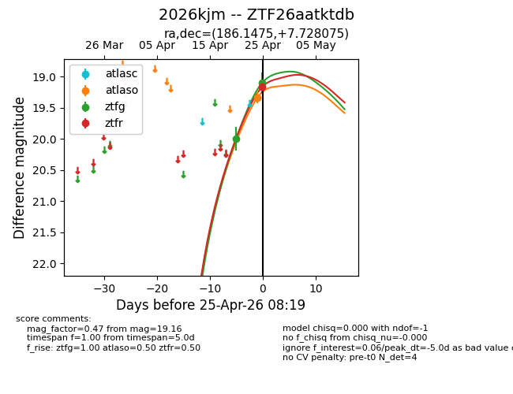
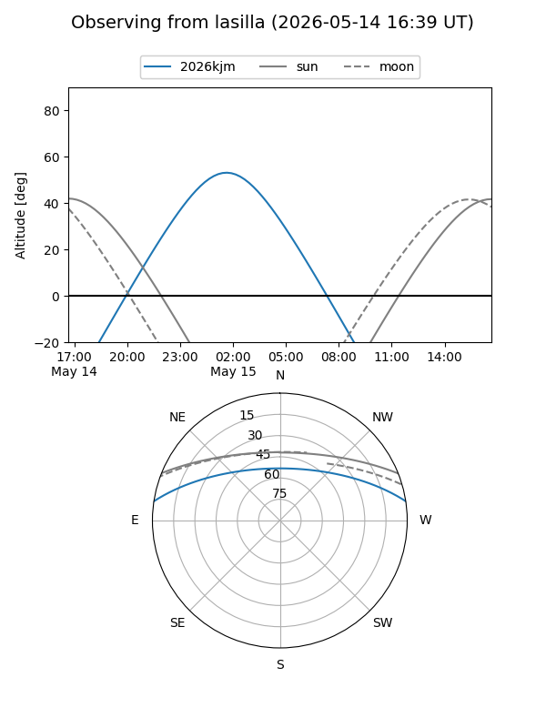
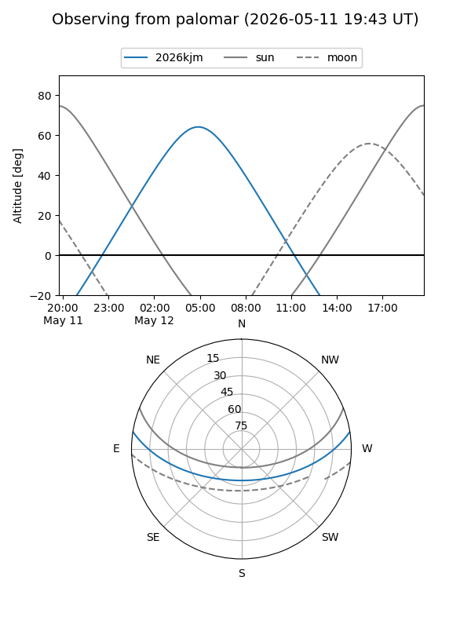
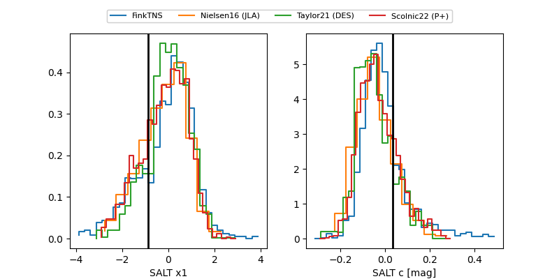

2026kjm
Target 2026kjm at 2026-04-25 08:20
Aliases and brokers:
FINK: link
Lasair: link
ALeRCE: link
TNS: link
YSE: link
alt names
ZTF26aatktdb (ztf,fink_ztf)
2026kjm (tns,yse)
Coordinates:
equatorial (ra, dec) = 186.1475,+7.72807
equatorial (HMS+DMS) = 12:24:35.41,+07:43:41.07
galactic (l, b) = (283.5422,+69.58280)
Flags:
Photometry:
last atlaso=19.33, ztfg=19.10, ztfr=19.16
1 atlaso, 2 ztfg, 1 ztfr detections
Lightcurve

Visibility


Additional plots
